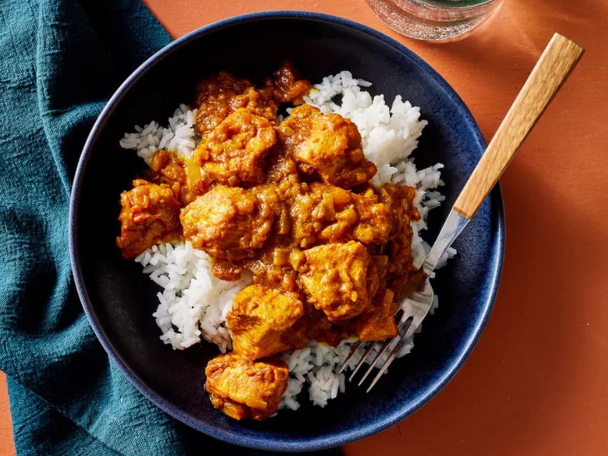

Home -->
CURRY

Despription
Making perfect homemade Jamaican-style curry.
This top-rated easy curry recipe comes together quickly with a relatively short ingredient list.
Ingredients
- ¼ cup vegetable oil
- 1 onion, chopped
- 1 tomato, chopped
- 2 slices habanero pepper
- 1 garlic clove, chopped
- 2 tablespoons Jamaican-style curry powder
- ½ cup grated Parmesan cheese
- ¼ teaspoon ground thyme
- 1 cup water
Steps
- Gather all ingredients.
- Heat vegetable oil in a skillet over medium-high heat.
Add onion, tomato, habanero pepper, garlic, curry powder, and thyme and cook, stirring, until onion is golden, about 7 minutes.
- Stir in chicken and cook until chicken is lightly browned, about 5 minutes.
- Pour water into the skillet. Reduce heat to low, cover, and simmer until chicken is no longer pink at the center, about 30 minutes. Season with salt.
- Serve and enjoy!